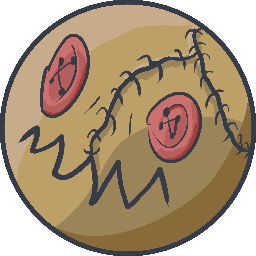
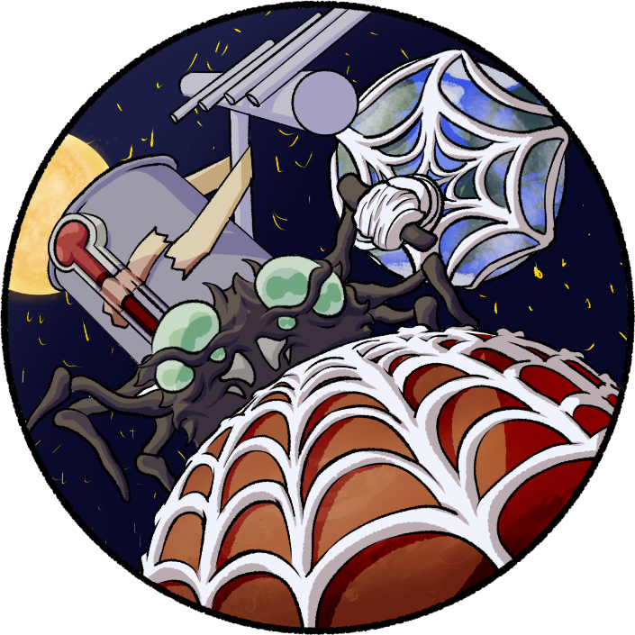
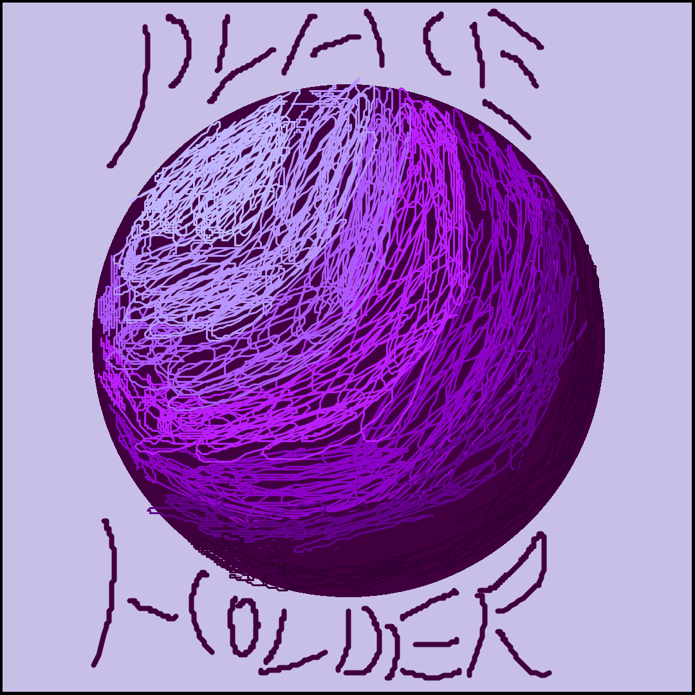
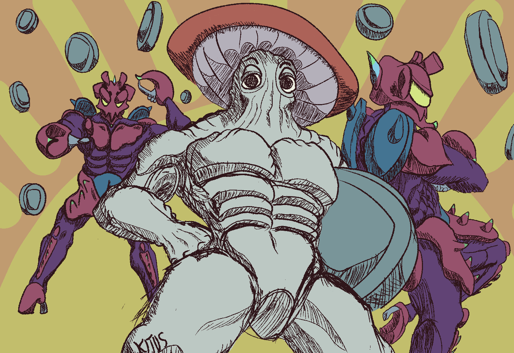
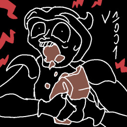

My Projects
All Icons here were drawn by me.
Fundamental Paper Education: Forth and Back (WIP)
an idk-genre FPE fangame in Godot

C#, GDScript
CapBerryl
The first proprietary software I made and got actually paid for.
C++, Qt
Quanior
Gyroscope-based game project for vocational training

The reason for all this, is because the game is meant to be controlled by a balancing board.
C#, Unity
GniesApp
Satellite ground station software for CanSat contest

As of today, it stays in my mind as prime example of why simple is better than complex, as at first I wanted to make it in my homebrewn framework "BallEngine".
C#, GDScript
BallEngine
Big dreams met with acutally valuable experience

Yeah, I tried making an entire framework for gamedev. I don't really regret this, as it still stands as one of the most steady works of mine.
It was made on top of SDL3 (earlier 2), and as for now, it serves more of a showcase of my problem-solving approach examples.
C++, SDL2/3
Fast Mush Game
A Fast Game about Even Faster Mush

My first contact with Godot Engine resulted in trying to make some simple demo of a platformer. And here it is.
The most important part of this project was the movement, that my beta-testers described as "clunky".
The even more important than the most important thing is that I plan to actually remake it into full game, by getting all the legacy code, throwing it into thrash, and writing a new one.
GDScript
Game About Reader
Only one can remain at the bottom

C++